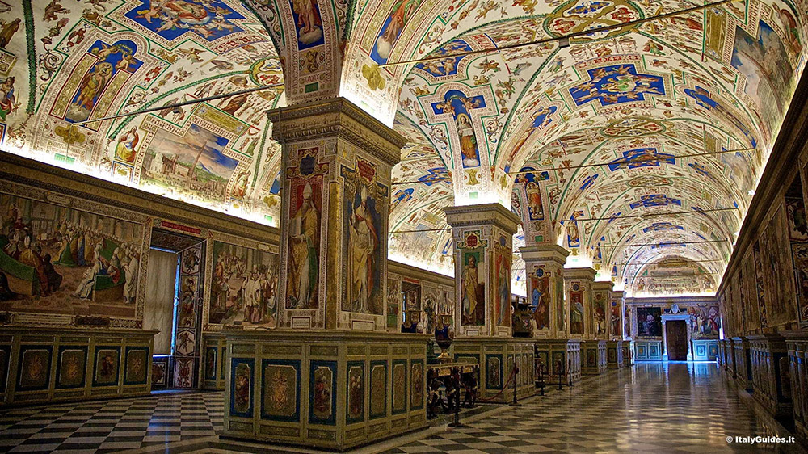
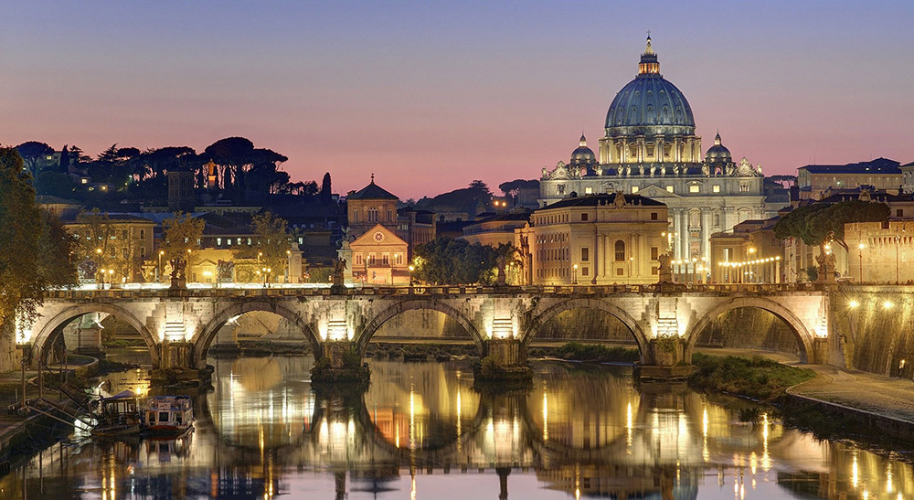
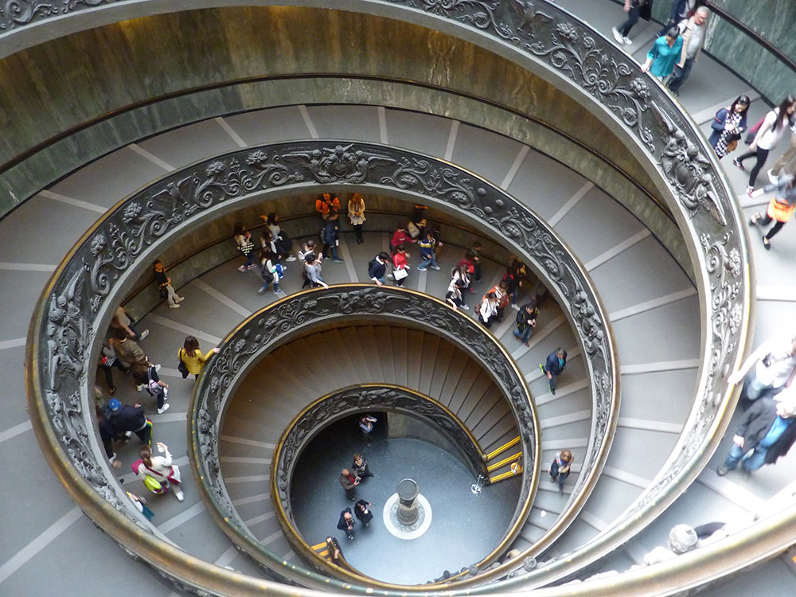

Welcome to Rome
Thank you for stopping by and seeing all that Rome has to offer. Let's start at the Vatican Museum.
The Vatican Museums (Musei Vaticani) house some of the most impressive and important historical artefacts and works of art in the world. Originally the site of the Vatican Museums was used for papal palaces, but they are now a series of galleries in Vatican City.
From the exemplary collection of classical statues in the Pio-Clementine Museum to the beautiful frescos by Raphael in the Raphael Rooms, the Vatican Museums have an extensive array of pieces from many historic periods.

Raphael’s Rooms or “Stanze di Raffaello” are divided into several periods, such as the room of Constantine, the room of Heliodorus, the room of Segnatura and the room of the Fire in the Borgo and depict events throughout history – both real and legendary.
The Gallery of Maps is particularly interesting, its walls adorned with topographical maps of Italy created by Ignazio Danti. The Vatican Museums also house a Gregorian Egyptian Museum containing funerary pieces, stelae and statues bearing hieroglyphics, a reconstruction of the Canopus of Hadrian’s Villa and mummies as well as reliefs and inscriptions from Assyrian palaces.

It would take many visits to see everything in the Vatican Museums. Some of the highlights include Leonardo Da Vinci’s painting of the Catholic Saint Jerome, the Roman Christian sarcophagus of the politician Junius Bassus (d 359 AD) and the Dogmatic Sarcophagus or “Trinity Sarcophagus”, dating back to the mid-fourth century AD.
However, the star attraction of the Vatican Museums is the Sistine Chapel. Probably the last of the exhibitions one sees at the Vatican Museums (it is quite a walk from the entrance), the Sistine Chapel is the magnificent creation of Michelangelo from 1508 to 1512. Its famous ceiling is frescoed in a multitude of colours with depictions from the Old and New Testaments showing, amongst other things, the creation of the world and original sin.

Guided tours of the Vatican Museums take place Mondays to Saturdays hourly from 9am to noon. The Vatican is part of the UNESCO World Heritage site of the Historic Centre of Rome. This site also features as one of our Top 10 Tourist Attractions in Italy.